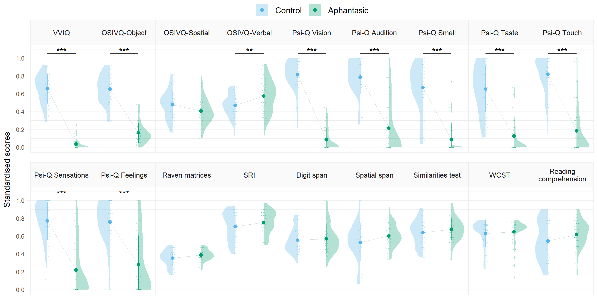
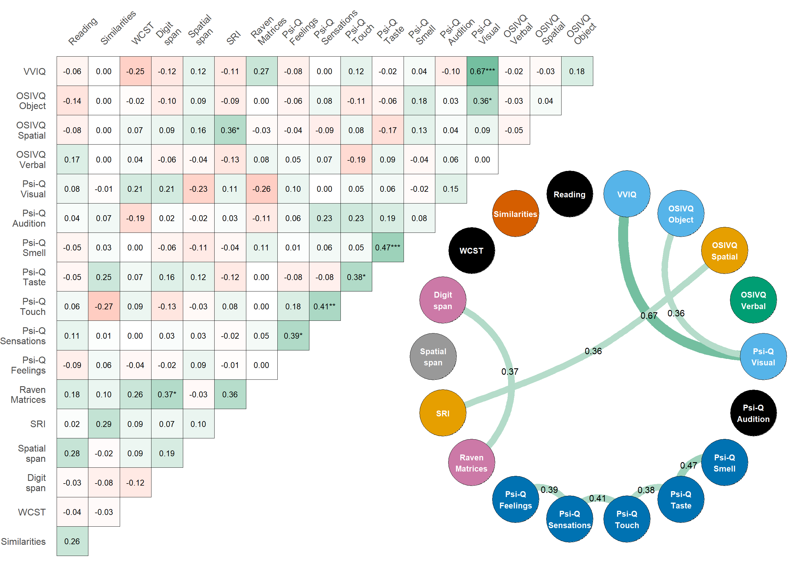
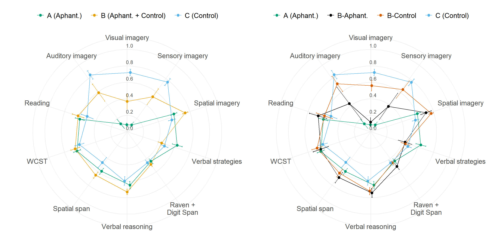

aphantasiaCognitiveClustering is a data analysis project wrapped in an R package for reproducibility1. It contains the code and data to reproduce the analyses presented in the article “Unsupervised clustering reveals spatial and verbal cognitive profiles in aphantasia and typical imagery”. You can read the accepted manuscript for free here. All study materials are available on the Open Science Framework here.
What exactly is in this R package?
The package includes the preprocessed data ready for analysis in the form of a built-in dataset called study_data to make it easily accessible. The package comes with a set of functions for manipulating the data and reliably reproducing the analyses presented in the article. The data and the functions are documented in detail in the package website, which also includes:
A data analysis report describing how to use the package to reproduce all the analyses
A reproducible version of the manuscript with all numerical results generated directly from the package and rendered using Quarto.
The source code for these notebooks is also available in the vignettes/ folder of the package repository.
Installation
You can install the development version of aphantasiaCognitiveClustering from GitHub with:
# install.packages("pak")
pak::pak("m-delem/aphantasiaCognitiveClustering")Alternatively, you can clone the repository, launch the R project in RStudio by opening the aphantasiaCognitiveClustering.Rproj file and run the following command:
devtools::load_all()
#> ℹ Loading aphantasiaCognitiveClustering
#> Welcome to aphantasiaCognitiveClustering.
#> See https://osf.io/7vsx6/ for the associated study.… Which will load the package and make all its functions and data available in your R session.
Examples
Below are some examples of how to use the data and functions from the package to recreate the graphs from the article.
Score comparisons between groups for all original variables:
study_data |>
scale_vars() |>
get_longer() |>
filter_study_variables("original") |>
plot_score_violins()
Correlation matrix and graph of the study variables:
study_data |> correlate_vars(partial = TRUE) |> plot_score_cor_joint()
Clustering and radar plots of the clusters:
library(patchwork)
df <-
merge_clusters(
df_raw = study_data,
df_red = scale_reduce_vars(study_data),
clustering = cluster_selected_vars(study_data)
) |>
scale_vars() |>
get_longer() |>
filter_study_variables("reduced")
plot_score_radars(df, Cluster, r_off = 6, l_off = 6) +
plot_score_radars(df, Subcluster, r_off = 6, l_off = 6)
Visit the package website for detailed explanations of all the package features!
Citation
This GitHub repository is archived in the OSF project dedicated to the study, which allowed to assign a permanent DOI to the code and data. Thus, if you use this code or data in your research, please cite the OSF project with one of the following:
Delem, M., Cousineau, D., Cavalli, E., & Plancher, G. (2025, November 19). Supplementary materials for ‘Unsupervised clustering reveals cognitive profiles in aphantasia’. https://doi.org/10.17605/OSF.IO/7VSX6